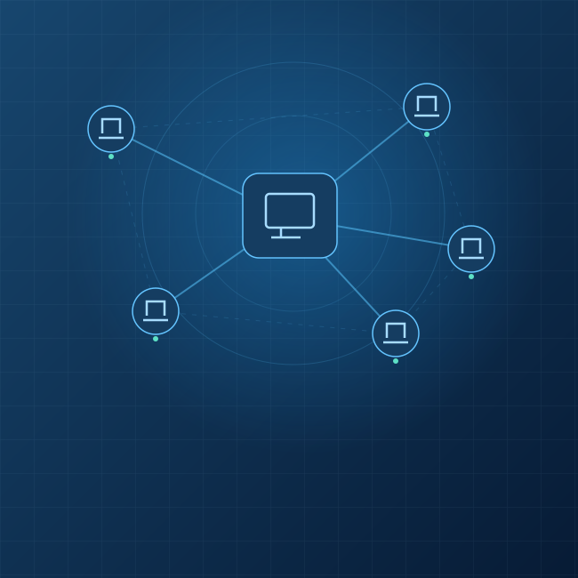

Field services
Atendimento técnico em campo para lojas e filiais em todo o território nacional, com gestão centralizada das demandas.
Planejar atendimento ↗Tecnologia para empresas e varejo
Da infraestrutura ao suporte em campo, a ALX conecta pessoas, equipamentos e soluções para manter sua empresa em movimento.

01 / Soluções para sua empresa
Projetos, serviços e consultoria que conectam o investimento em tecnologia às necessidades do seu negócio.
Atendimento técnico em campo para lojas e filiais em todo o território nacional, com gestão centralizada das demandas.
Planejar atendimento ↗Implantação de PDVs, impressoras, pin pads, SATs e servidores, conforme as necessidades da sua operação.
Conversar sobre implantação ↗Preparação de imagens e implantação de terminais para apoiar a expansão, renovação e padronização de ambientes.
Estruturar um projeto ↗Ativação e monitoramento de links para conectar unidades, equipes e os sistemas que fazem parte do seu dia a dia.
Avaliar conectividade ↗Atendimento emergencial / Novos clientes
Solicite reparos e contratação emergencial de suporte técnico para sua empresa, mesmo que ainda não seja cliente ALX.
Prazo sujeito à confirmação de disponibilidade, localização e escopo pela equipe ALX.
O envio da solicitação não confirma agendamento ou contratação. A equipe informa condições, orçamento e prazo antes do aceite.
Técnicos distribuídos pelo Brasil para atender demandas de empresas, lojas e filiais.

02 / Conheça a ALX
Sediada em São Paulo, a ALX nasceu em 2001 para oferecer serviços integrados de Tecnologia da Informação: do planejamento ao fornecimento de produtos e ao suporte de projetos.
Atuamos com pequenas, médias e grandes operações de varejo, reunindo conhecimento técnico, ética e parcerias para atender diferentes demandas em todo o território nacional.
Transformar ideias em resultados e criar valor para cada cliente.
Respeito às pessoas, inovação contínua e compromisso com as necessidades do negócio.
03 / Clientes
Algumas das marcas apresentadas no portfólio da ALX.


Antes de conversar
Sim. Novos clientes podem solicitar projetos ou atendimento emergencial. A ALX avalia a demanda e confirma orçamento e condições antes da contratação.
Informe a cidade, o equipamento e o problema. A equipe verifica disponibilidade e escopo e confirma o prazo aplicável. O prazo não começa automaticamente ao preencher a solicitação.
Sim. A ALX conta com técnicos distribuídos pelo Brasil. Consulte a disponibilidade para a sua cidade e para o serviço necessário.
Descreva o serviço, a localização e a quantidade de unidades ou equipamentos. Para emergências, informe também o impacto na operação e a urgência.
04 / Vamos conversar
Projeto planejado ou demanda urgente: o primeiro passo é entender o que sua empresa precisa.
Rua Paulo de Faria, 146 · Vila Gustavo